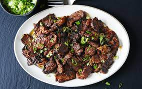

Bulgogi

a Korean-style grilled or roasted dish made of thin, marinated slices of meat
Ingredients
- 2 tbs of Soy Sauce
- 3 tbs of Gochujang
- 1 tbs red pepper flakes (Sambal if you like it extra spicy)
- 2 tbs of rice wine or mirin
- 2 tbs white sugar
- 1 tbs sesame oil
- 1 tbs of minced garlic
- 1 tbs grated ginger
- 1/8 tsp black pepper
- 1lb of sirloin steak
- half yellow onion thinly sliced
- 2 green onions sliced
- 1 tbs oil
Steps
- In a bowl mix the Soy Sauce, Gochujang, pepper flakes, rice wine, sugar, sesame oil, garlic, ginger, and black pepper
- Cut the serloin steak into bite size pieces, about 2 inches.
- Combine the meat, onions, with the mixture created earlier and place in the fridge
- Heat a grill/pan and over medium heat add cooking oil. Cook the marinated serloin throughly and ensure the onions are caramelized
- Server immediately on top of steamed rice